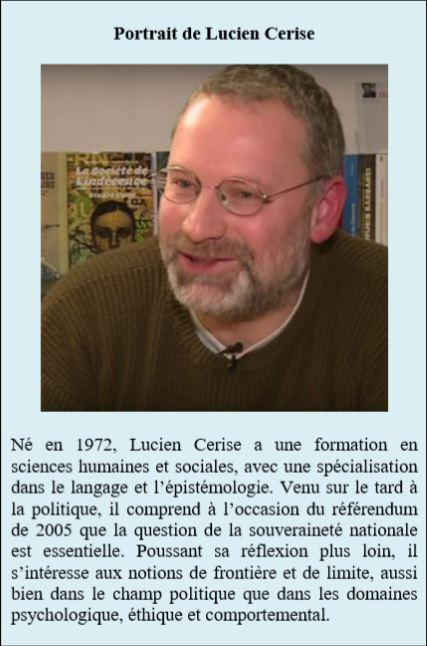

100 ans après le coup d’État bolchevique. Entrevue avec Lucien Cerise
par Iurie ROŞCA
À l’occasion du centenaire de la Révolution d’Octobre 1917, nous avons l’intention de poser la même série de questions à des personnalités de Moldavie, Roumanie, Russie et de pays occidentaux. Ces entretiens ont pour but de représenter une modeste contribution à la réévaluation des événements qui ont marqué le XXe siècle. Bien que 100 ans se soient écoulés, dans la conscience du public de l’espace ex-communiste et du monde entier, il y a encore beaucoup de préjugés sur les causes profondes de ce bouleversement majeur, mais aussi sur la façon dont la « révolution prolétarienne » est traitée par l’élite politique, le milieu universitaire et la hiérarchie de l’église. Trouver des réponses appropriées à certaines questions d’une telle complexité nous semble absolument vital. Après les entrevues publiées dans « Sans Frontières » d’Emmanuel Leroy et Valérie Bugault, tous deux rédacteurs de « Méthode », nous rencontrons aujourd’hui Lucien Cerise.
1. Quelles sont les origines spirituelles, intellectuelles et idéologiques de la Révolution d’Octobre ?
Lucien Cerise : Je vais vous proposer une histoire alternative et révisée de la Révolution d’Octobre. J’assume ces deux adjectifs car, parfois, il faut savoir faire des expériences de pensée, prendre des risques et pousser certaines hypothèses jusqu’au bout de leur logique. Je n’affirme rien à 100 % mais je dégage des pistes cohérentes, des rationalités, après avoir écarté par élimination celles qui sont impossibles.
Je pense que l’Histoire, c’est l’histoire des États profonds, autrement dit, l’histoire de la haute administration militaire et des services secrets d’action clandestine et de renseignement. Aujourd’hui, l’État profond russe est sain, en tout cas plus sain que tout ce que l’on voit en Occident. Aux USA, Donald Trump essaye de soigner le malade en « drainant le marécage » (« Drain the Swamp »), et il y a beaucoup de travail.
Purger un État profond demande du temps. C’est ce qui explique que si l’État profond russe est sain sous Poutine, c’est qu’il l’était sous Eltsine, et que s’il l’était sous Eltsine, c’est qu’il l’était sous le communisme, et que s’il l’était sous le communisme, c’est qu’il l’était sous le tsarisme. La nature du régime est un phénomène de surface au regard de la continuité de l’État profond, que l’on peut discerner sous les ruptures de régime. On peut dégager cette continuité après avoir éliminé l’impossibilité d’une discontinuité.
Pourquoi la discontinuité est-elle impossible ? Parce que quand vous perdez vraiment le contrôle d’un État profond à cause d’une révolution, c’est définitif, vous ne le reprenez jamais ou alors seulement après une contre-révolution ou un travail d’infiltration étalé sur plusieurs générations. Ce qui n’a pas eu lieu entre 1917 et l’arrivée de Staline au pouvoir, qui vient pourtant subvertir les résultats de 1917. La Révolution d’Octobre avait pour but de subvertir et d’affaiblir la Russie. Or, sous l’impulsion de Staline, la Russie est sortie du processus subversif et révolutionnaire plus forte qu’avant. Il y a donc eu subversion de la subversion. Révolution dans la révolution. Autrement dit, l’État profond russe est parvenu à placer son homme-lige, Staline, pour récupérer et valoriser au bénéfice de la Russie la fenêtre de possibilité que les révolutionnaires avaient ouverte de leur côté pour détruire la Russie.
La chute du Tsar arrangeait tout le monde, l’État profond comme les révolutionnaires. Nicolas II Romanov faisait preuve d’une cécité géopolitique et d’un immobilisme politique inquiétant à une époque où les armées occidentales planifiaient déjà d’envahir la Russie. En fait, depuis Napoléon Ier Bonaparte, l’invasion de la Russie est un sport auquel les Occidentaux s’essayent régulièrement. En 2017, nous ne sommes toujours pas sortis de ce que la géopolitique nomme le Grand Jeu, c’est-à-dire le clivage fondateur entre d’une part Moscou, adossé à l’Eurasie, et d’autre part le capitalisme occidental, adossé à Londres, Wall-Street, Berlin, et utilisant toutes les forces de procuration qui lui tombent sous la main, comme le nazisme et ce qu’il en reste en Ukraine.
En ce début de XXe siècle, une révolution industrielle et une politique « stakhanoviste » d’armement mécanisé devenaient indispensables pour faire face à ces défis militaires et garantir l’intégrité de la Russie. Mais le Tsar, homme d’un autre âge, bloquait tout. L’État profond russe a donc laissé faire les révolutionnaires, voire les a même aidés un peu, puis a récupéré leurs résultats en conservant un habillage socialiste mais en modifiant furtivement la trajectoire initiale pour préparer l’URSS au choc militaire avec l’Occident.
Tout ce que je viens de dire là reste hypothétique mais peut être étayé par un certain nombre de faits, en tout cas plus que l’histoire officielle, qui ne tient pas debout. Maintenant, est-il possible de qualifier plus précisément cet État profond russe qui a réussi la performance d’assurer sa propre continuité du tsarisme jusqu’à aujourd’hui, en passant par le bolchévisme expérimental, le communisme stalinien, la déstalinisation, la perestroïka, puis la fin du communisme et les années de décomposition libérale sous Eltsine ?
Sous le tsarisme, avant 1917, c’est l’Église orthodoxe qui contrôlait l’État profond et les services de renseignement russes, comme dans toutes les monarchies où l’Église et l’État ne sont pas séparés. En Russie tsariste, la police secrète (Okhrana) était donc placée sous tutelle du Patriarcat orthodoxe. Si le Patriarcat avait perdu le contrôle de l’État profond russe en 1917, il ne l’aurait jamais repris à cause du verrouillage mis en place par les révolutionnaires.
Par exemple, en France, l’Église catholique a perdu le contrôle de l’État en 1789 et ne l’a jamais repris, au profit des forces révolutionnaires plutôt antichrétiennes.
Le fameux texte intitulé « Protocoles des Sages de Sion » et rédigé vers 1900 par les services secrets russes doit être interprété comme un avertissement un peu romancé contre ces forces révolutionnaires, impliquées également dans la Révolution d’Octobre mais qui n’ont jamais réussi à s’emparer complètement de l’État profond russe, resté pour l’essentiel aux mains du Patriarcat orthodoxe jusqu’à aujourd’hui, en dépit des ruptures de régime et des alternances politiques. Ce qui explique que cet État profond soit encore sain et intègre en 2017, après un siècle de tumultes qui auraient dû en finir avec la Russie.
2. Pourquoi ce coup d’État s’est-il produit spécifiquement en Russie et dans quelle mesure est-ce un « projet importé » ?
L.C. : Ce coup d’État s’est produit en Russie car la Russie était et est toujours l’objet des convoitises du capitalisme occidental. Les immenses territoires russes s’étendant sur 1/6 des terres émergées font saliver beaucoup de gens depuis longtemps. Nicolas Troubetskoï, le linguiste et géopolitologue fondateur de l’Eurasisme, a écrit en 1922 dans « Le problème russe » que la guerre mondiale n’aura pas de fin tant que son pays n’aura pas été conquis par les « romano-germaniques ». (1) De son côté, l’un des révolutionnaires les plus actifs et emblématiques, Alexandre Parvus, offrait en 1915 au gouvernement allemand de l’époque, pourtant peu porté sur le socialisme, un plan complet intitulé « Préparation de grèves politiques massives en Russie » pour renverser le Tsar. (2) À Londres ou à Berlin, les soutiens occidentaux des révolutionnaires russes se fichaient complètement du marxisme, du bolchévisme, du socialisme, du communisme, et voyaient dans ces doctrines de simples vecteurs de désordre capables de déstabiliser l’empire russe, avant de le conquérir et de le morceler pour se partager le gâteau. Ces projets de conquête de la Russie par n’importe quel moyen ont trouvé un appui institutionnel en Pologne, notamment chez Józef Piłsudski, ministre des armées et chef d’État dans les années 1920-1930. À partir de 1904, il élabora une vision géopolitique en deux volets : le prométhéisme, consistant à soutenir les séparatismes en Russie pour faire éclater son unité, et l’Intermarium, pour isoler la Russie, puis l’URSS, derrière une barrière d’États coalisés s’étendant entre la Mer noire et la Baltique. La géopolitique anglo-américaine, de Mackinder à Brzezinski, en passant par Spykman et Kennan, trouve là un complément idéal aux théories du Heartland et du Containement selon lesquelles l’hégémonie atlantiste sur le monde suppose d’encercler la masse territoriale russe avant de l’envahir et de la décomposer pour se l’approprier.
3. Le régime soviétique a produit une idéologie spécifique qui est aussi nommée la religion de la civilisation soviétique. Quelles sont les causes et les caractéristiques de la soviétolatrie ? Comment expliqueriez-vous le fait que le virus communiste persiste encore en Russie et dans les anciens pays socialistes, même après plus d’un quart de siècle ?
L.C. : La soviétolatrie est un peu anachronique aujourd’hui. Le communisme appartient au passé et ne reviendra jamais en tant que puissance géopolitique. Ceci étant dit, après un quart de siècle d’expérience libérale, l’opposition manichéenne entre la « prison communiste » et le « paradis libéral » commence à se nuancer au bénéfice d’une réévaluation des aspects positifs du communisme. En effet, le communisme répond à certains besoins élémentaires de l’humain, notamment la prévisibilité de l’existence pour les pauvres et pas seulement pour les riches. Le capitalisme, l’autre nom de la ploutocratie, fait basculer l’existence dans un système découplé : prévisibilité pour les riches et imprévisibilité pour les pauvres. Quant au libéralisme, c’est l’imprévisibilité pour tous s’il est réellement appliqué, mais il ne l’est jamais et se confond à terme avec le capitalisme le plus hiérarchisé.
Or, l’imprévisibilité est anxiogène et ne convient à personne. En effet, tout le monde passe son temps à planifier, anticiper, prévoir et tenter de prédire de quoi l’avenir sera fait. C’est un besoin naturel lié à l’instinct de conservation.
Le communisme tel qu’il a existé réellement à partir de 1945 dans plusieurs pays a vraiment assuré à des millions de gens modestes le minimum économique vital et la stabilité politique et psychologique permettant de prévoir un avenir simplement décent pour soi-même et ses enfants.
Non pas un « avenir radieux » – la triviale réalité du communisme était bien éloignée des « lendemains qui chantent » – mais un niveau de vie correct pour tous et permettant de faire des projets.
Telle est la différence avec le libéralisme qui nous plonge dans le chaos, la précarité, l’imprévisibilité, le court terme, et qui introduit depuis une vingtaine d’années dans l’ex-bloc communiste des pathologies sociales bien connues en Occident comme les enfants hyperactifs et violents, les épidémies de dépressions ou de divorces, le morcellement du lien social et de nouvelles formes de toxicomanie bien plus graves que la vodka. Un Français d’origine russe m’a dit un jour : « Le rideau de fer n’avait pas pour but d’empêcher les gens de sortir, mais d’empêcher la merde de rentrer. »
4. Ceux qui critiquent l’expérience soviétique fonctionnent souvent avec le système de référence de la démocratie occidentale pour aborder les effets politiques et économiques de cette période. Pourquoi les aspects du religieux, spirituel, métaphysique restent la plupart du temps au second plan ?
L.C. : Les aspects religieux, spirituel et métaphysique restent au second plan car la critique de l’expérience soviétique est accomplie au nom de la consommation et de l’économie de marché. Ce phénomène est largement partagé. J’ai deux branches familiales en Biélorussie et en Pologne (ainsi qu’une bisaïeule ukrainienne mais que je n’ai pas connue). Quand des cousins et cousines du bloc de l’Est nous rendaient visite en France ou que de la famille française allait les voir dans les années 70 et 80, je recevais des échos de vies normales et je voyais des gens bien portants, joyeux, et même avec quelques kilos en trop, assez éloignés du cliché des populations persécutées et mourant de faim que la propagande anticommuniste tentait de nous inculquer. Par ailleurs, mon épouse est née en Pologne et a grandi dans l’équivalent polonais d’un kolkhoze (Państwowe Gospodarstwo Rolne, PGR) où mes beaux-parents vivent encore. J’ai donc un suivi comparatif des deux systèmes, occidental et communiste, sur une quarantaine d’années, avant et après la chute du mur de Berlin. Ma principale conclusion est que le communisme proposait un état de la société arrêté dans les années 50, ce qui n’est pas si grave. Or, de nombreuses personnes des pays de l’Est se percevaient et se perçoivent toujours de façon misérabiliste au prisme de la propagande libérale et progressiste. Pendant la guerre froide, la propagande de l’Ouest était tellement puissante qu’elle traversait le rideau de fer et était intériorisée aussi par les peuples du bloc communiste, qui se voyaient plus malheureux qu’ils ne l’étaient vraiment et qui idéalisaient le « monde libre », vis-à-vis duquel ils nourrissaient un complexe d’infériorité qui dure encore aujourd’hui. En conséquence, même s’ils étaient de bons chrétiens qui vont à la messe, ils étaient anticommunistes surtout parce qu’ils rêvaient du « fruit défendu » et de ce mode de vie occidental consumériste consistant à remplir son caddie de marchandises au supermarché, écouter du rock’n roll (interdit sous le communisme), porter des blue jeans (un vrai trafic existait pendant la guerre froide), érotiser la société, etc. Le matérialisme et l’hédonisme ont joué un rôle majeur dans l’anticommunisme, certainement plus important que la spiritualité authentique.
5. Aujourd’hui, le libéralisme et le communisme sont considérés comme deux idéologies totalement différentes. Cependant, en les examinant de plus près, nous pouvons identifier une série de coïncidences et de complémentarités frappantes. Comment décririez-vous les différences et les similitudes entre ces théories politiques ?
L.C. : Je vois surtout des différences. Pour reprendre les catégories de Zygmunt Bauman et Karl Popper, le communisme propose un modèle de société solide et fermée, comme les sociétés traditionnelles, et le libéralisme propose un modèle de société liquide et ouverte. Cette liquéfaction libérale attaque la psychologie et la société jusqu’aux identités sexuelles, d’où le phénomène du « gender fluid » : des individus qui pensent être un homme le matin et une femme l’après-midi, ou l’inverse, ou qui changent plusieurs fois par jour au gré de leurs humeurs. Chacun fait ce qui lui plaît en fonction de ses envies et caprices, l’individu est roi. Il est impossible de construire une société sur cette base complètement maladive. En termes de psychopathologie, le communisme produit des effets classiques de névrose, c’est-à-dire de fermeture et de refoulement du désir individuel, ce qui est la condition aux structures collectives.
Pas de société sans Surmoi, sans autorité normative au-dessus de l’individu, comme le savent tous les psychologues. À l’opposé, le libéralisme refoule le refoulement et exige la libre expression du désir individuel (« Il est interdit d’interdire »), ce qui aboutit à morceler toutes les structures collectives et sociales. C’est la société ouverte de Popper et de son disciple George Soros, c’est-à-dire en fait une juxtaposition d’egos et de narcissismes, incapables de « jouer collectif », donc une non-société. Le libéralisme introduit à la perversion, puis encore au-delà à une véritable psychose sociale qui menace de destruction toutes les structures collectives et jusqu’à l’espèce humaine. Je ne crois pas que le communisme soit jamais allé jusqu’à ce niveau de dangerosité.
6. Certains chercheurs affirment que le projet communiste a trouvé une suite logique dans le projet globaliste. Dans quelle mesure cette opinion est-elle valable ?
L.C. : Il y a de vagues ressemblances entre communisme et globalisme mais surtout une différence fondamentale et de nature : le communisme s’est auto-dissous volontairement alors que le globalisme est incapable de cette sagesse, bien qu’il soit encore moins viable ! Certes, l’échelle mondiale est visée dans les deux cas, mais de deux façons radicalement opposées : le communisme voulait construire un ordre social et économique dans quelques pays qui devaient servir d’exemples, alors que le globalisme cherche à plonger le monde dans un chaos général par une guerre hybride totale. Ce qui provoque heureusement quelques résistances. La contestation de ce chaos global est d’autant plus véhémente que l’on peut encore comparer avec un modèle extérieur qui marche mieux. De par sa nature totalisante et totalitaire, le globalisme doit donc faire taire impérativement ces contradictions, donc exterminer coûte que coûte tout contre-modèle, tout contre-exemple, toute extériorité à son modèle unique, donc toute forme d’altérité permettant de comparer. Toute alternative politique et géopolitique à l’Occident libéral multi-culti et LGBT doit cesser d’exister, ce qui explique cette guerre à mort menée à la Russie, à la Syrie, à l’Iran, à la Corée du Nord, à la Chine.
7. Dans le monde ex-communiste et en Occident, la russophobie est alimentée par la confusion entretenue artificiellement entre l’Union Soviétique et la Russie (jusqu’en 1917 et après 1991), les crimes de l’ancien régime communiste étant attribués à la nation russe. C’est la même chose que si le nazisme était attribué à la nation allemande, quelque chose qui devrait causer la germanophobie. À qui profite le maintien de cette confusion et comment pourrait-il être surmonté ?
L.C. : Le pouvoir russe est sur la défensive depuis le XIXe siècle pour parer aux agressions occidentales. Les crimes de l’ancien régime communiste doivent être lus à la lumière de ce Grand Jeu, cette guerre à la Russie qui a commencé sous le tsarisme et qui passe également par des batailles de chiffres. C’est ainsi que les chiffres des crimes du communisme ont été gonflés par la propagande de guerre anticommuniste, avant la Deuxième Guerre mondiale, pour diaboliser l’URSS et préparer l’opinion occidentale à l’attaquer, ce qui aboutira à l’Opération Barbarossa en 1941 et qui ouvrira le front de l’Est de la guerre ; et après le conflit, pendant la guerre froide, pour justifier l’entretien des tensions. Les chiffres occidentaux des victimes de l’URSS oscillent communément entre 30 et 90 millions de morts. Jacob Djougachvili, arrière-petit-fils de Staline, commente dans une vidéo la note commune du Procureur général Roudenko et du ministre des Affaires intérieures Krouglov rédigée pour Khrouchtchev le 1er février 1954, en pleine déstalinisation, donc à un moment où le Kremlin avait intérêt lui-même à gonfler les chiffres des victimes du stalinisme. (3) Cette note officielle du Parti Communiste d’Union Soviétique dénombre 3 777 380 personnes condamnées pour des « crimes contre-révolutionnaires », dont 642 980 à la peine de mort, pour la période qui va de 1921 à 1954. Pour être exhaustif, il faut ajouter à ces chiffres ceux d’avant 1921 et d’après 1954, ce qui ne change pas grand-chose. Et pour être juste, il faut rappeler le contexte de guerre totale imposé par l’Occident pendant des décennies et induisant dans l’État moscovite des politiques autoritaires et centralistes afin de pouvoir soutenir les prochaines sanctions économiques ou le prochain affrontement militaire.
Les chiffres gonflés des crimes de l’URSS, d’une part, et la confusion entretenue entre URSS et Russie d’autre part, profitent à ceux qui veulent aujourd’hui diaboliser la Russie à des fins de propagande de guerre et pour s’emparer de son territoire. La nature du régime en place à Moscou n’a aucune importance puisque c’est le territoire géographique qui est visé. Qui veut s’emparer du territoire russe ? Ce sont certains intérêts capitalistes occidentaux qui essayent d’imposer une dictature des minorités au moyen d’une vaste ingénierie génétique, géopolitique et sociale qui doit aboutir au transhumanisme. Des puissances privées en sont les vecteurs mais aussi des organisations supranationales bien connues : l’ONU, la Commission européenne et les deux piliers de l’anticommunisme d’hier et de la russophobie d’aujourd’hui, la CIA et l’OTAN, qui ont fait leur coming-out LGBT récemment. (4) Ce globalisme aux relents kabbalistiques a incubé dans les milieux anticommunistes de droite et de gauche pendant la guerre froide et s’épanouit désormais dans la russophobie de droite et de gauche également. (5) La confusion URSS/Russie étant le produit de ces milieux globalistes, elle ne peut donc être surmontée qu’en éradiquant ces mêmes milieux qui entretiennent la confusion à des fins de propagande de guerre.
8. Une autre confusion fréquente en Russie et dans l’ancien espace communiste est l’attachement simultané d’une partie de la population à la fois à l’Église et à la civilisation soviétique, qui est par définition antichrétienne. Que faut-il faire pour surmonter cette approche au moins incohérente ? La hiérarchie de l’église pourrait elle-même contribuer de façon substantielle au dépassement de ces déviations ?
L.C. : La civilisation soviétique me paraît plus a-chrétienne que vraiment anti-chrétienne. C’est plus l’indifférence au fait religieux que l’hostilité qui dirige les relations entre communisme et religion. En France, les marxistes définissaient le matérialisme dialectique ainsi : « Des solutions concrètes à des problèmes concrets. » Ce n’est pas antireligieux, la transcendance n’est pas véritablement rejetée mais simplement relativisée et n’est pas placée au centre de la pensée politique. Par ailleurs, la théologie de la libération en Amérique latine démontre que le marxisme et le christianisme peuvent parfaitement s’associer dans un combat politique commun. Ces deux doctrines placent la défense des petites gens ordinaires au-dessus de tout et devaient donc nécessairement se rencontrer un jour. L’attachement simultané à l’Église et à la civilisation soviétique ne me paraît donc pas incohérent. Évidemment, de violents antagonismes entre communisme et religions sont apparus aussi, qui sont allés jusqu’aux persécutions, mais ces tensions venaient plus du fait que les religions, c’est comme tout, ça s’infiltre, ça se noyaute, ça se manipule et ça sert d’outil de manipulation éventuellement au bénéfice de puissances étrangères. Dès lors, les persécutions ne visaient pas les croyants et les religieux, mais les croyants et les religieux qui agissaient ou qui risquaient d’agir comme une cinquième colonne. La CIA a beaucoup travaillé avec le Vatican pour miner la stabilité du régime dans plusieurs pays du bloc communiste, notamment en Pologne.
9. Comment pourrait-on expliquer qu’à plus d’un quart de siècle après la chute du communisme et de l’URSS, le mausolée de Lénine est intact et que ses restes mortels ne sont pas enterrés ? Les explications qui se réfèrent à éviter d’agiter la sensibilité d’une partie des personnes âgées qui nourrissent la nostalgie ou celles de l’opportunité politique ne résistent pas à la critique. Quelles sont les causes spirituelles qui déterminent cette paralysie volitive et que devraient faire l’élite russe, l’Église, les intellectuels de pointe, l’administration gouvernementale pour sortir du filet de cette malédiction historique ?
L.C. : Vladimir Poutine a prononcé un jour cette phrase très équilibrée : « Celui qui ne regrette pas l’URSS n’a pas de cœur, celui qui veut son retour n’a pas de tête. » L’URSS a sauvé le monde pendant la Deuxième Guerre mondiale en empêchant le nazisme de s’étendre vers l’Est, ce qui a bloqué une fois de plus ce « Drang nach Osten » impérialiste qui existe depuis des siècles. Si Hitler était parvenu à envahir l’URSS, les puissances occidentales auraient exulté et seraient vite revenues à de bonnes relations diplomatiques avec Berlin, comme avant la guerre, révélant leur solidarité systémique avec le nazisme dans cette boulimie de conquêtes territoriales visant tout le continent eurasiatique. À cause de ces jeux d’alliance, nous aurions eu la théorie du genre dès les années 50 !
À l’opposé, le communisme s’est développé comme un puritanisme sans métaphysique, d’où ses effets éthiques d’imposition de limites comportementales et de contrôle des impulsions, analogues à ceux d’une religion. J’ai commencé à voyager en Europe de l’Est peu après la chute du mur de Berlin. Le mode de vie n’avait pas encore été déformé par le marketing. Aucune publicité dans les rues, pas de simagrées entre les gens, ni de sourires inutiles, une austérité générale très « situationniste » dans l’esprit. Oui, je préfère l’Homo Sovieticus à l’Homo Festivus. La source spirituelle du respect pour les reliques du communisme vient de ce que beaucoup de gens savent intuitivement qu’ils ont plus de valeurs à partager avec ce que fut le communisme qu’avec le libéralisme ou le nazisme, deux formes politiques qui entretiennent le culte de l’impulsivité et la transgression des limites et des frontières.
10. Au cours des dernières années de plus en plus de gens se tournent vers la Russie comme un bastion des valeurs traditionnelles du monde. Le courant de pensée antilibéral en Russie pourrait-il avancer à la mesure d’une Révolution conservatrice d’envergure mondiale et quelles sont, selon vous, les chances d’une résurrection religieuse d’envergure qui pourrait supprimer le paradigme libéral dominant de la scène de l’histoire ?
L.C. : Cette Révolution conservatrice d’envergure mondiale est une nécessité absolue. Il n’y a rien de plus important aujourd’hui. La survie de l’espèce humaine et de toute forme d’intelligence en dépendent. La dictature politiquement correcte et soit disant progressiste qui essaye de s’imposer partout déploie une véritable hystérocratie – ou idiocratie – c’est-à-dire un gouvernement des hystériques, des crétins et des incompétents qui n’ont à la bouche que les mots « inclusion », « diversité », « tolérance » mais qui ne tolèrent en fait aucune contradiction et qui travaillent à détruire la vraie diversité par l’inclusion obligatoire dans la pensée unique globaliste. Le gauchisme compassionnel des « Social Justice Warriors » n’est pas viable sur le long terme, c’est une maladie mortelle déjà largement répandue en Occident et qui cherche à se diffuser par la guerre au moyen de l’OTAN sur toute la surface de la planète. (6)
D’autre part, le communisme au sens strict est mort et ne reviendra pas à la vie. Il est peut-être temps de penser à une forme politique mixte, conservatrice et vraiment sociale, inspirée par l’écologie, par exemple. Il faut juger d’une forme politique en fonction de sa viabilité. Cela m’a conduit à proposer le concept de Base Autonome Durable (BAD), qui rencontre un certain succès dans ses applications survivalistes. Le site web de partage audio Ekouter résume ainsi le propos : « L’expérience du "socialisme réel" au XXe siècle n’a-t-elle finalement pas consisté à la mise en place d’une gigantesque Base Autonome Durable ? Au-delà de l’idéologie marxiste-léniniste, l’étude de l’histoire nous pousse à relativiser notre jugement qui identifie le communisme au progrès et le capitalisme à la réaction. Le survivalisme n’est peut-être pas là où on le croit... » (7)
De manière un peu provocante, j’ai dit dans une conférence avec Piero San Giorgio : « Le communisme, c’est le rêve de la droite. » (8) C’est un paradoxe historique mais c’est incontestable : le communisme s’est montré bien plus conservateur que le capitalisme, et il a joué un grand rôle dans la préservation des modes de vie ancestraux et dans la protection des structures traditionnelles. Le taux d’immigration proche de 0% dans tous les pays communistes y est évidemment pour quelque chose, ce qui ne signifie pas xénophobie ou racisme pour autant, le communisme étant pour l’amitié entre les peuples, mais chacun chez soi. Ce logiciel politique équilibré a protégé l’ancien bloc communiste de la décadence pendant deux générations (durée de la guerre froide) et le place aujourd’hui à l’avant-garde du conservatisme. Bref, l’époque est mûre pour une grande synthèse inspirée par la Quatrième théorie politique d’Alexandre Douguine qui joindrait les valeurs spirituelles aux acquis du socialisme réel, ce qui peut se résumer dans le mot d’ordre « Gauche du travail, droite des valeurs » défendu par Alain Soral. Cette ingénierie intellectuelle consistant à bricoler les théories pour en créer de nouvelles qui retiennent le meilleur de chacune doit conduire les Européens à s’appuyer sur les éléments conservateurs encore vivaces de l’ancien bloc communiste, en Russie et ailleurs, tout en les distinguant des éléments contaminés par le libéralisme, en Ukraine et ailleurs. Comment ? En travaillant dans nos pays respectifs à élaborer une sorte d’Internationale conservatrice visant à saper la société de l’indécence libérale partout où elle apparaît pour lui substituer une société de la décence populiste. C’est la raison pour laquelle je me joins avec enthousiasme au projet de Grande Europe du Manifeste de Chisinau.
Partager cette page